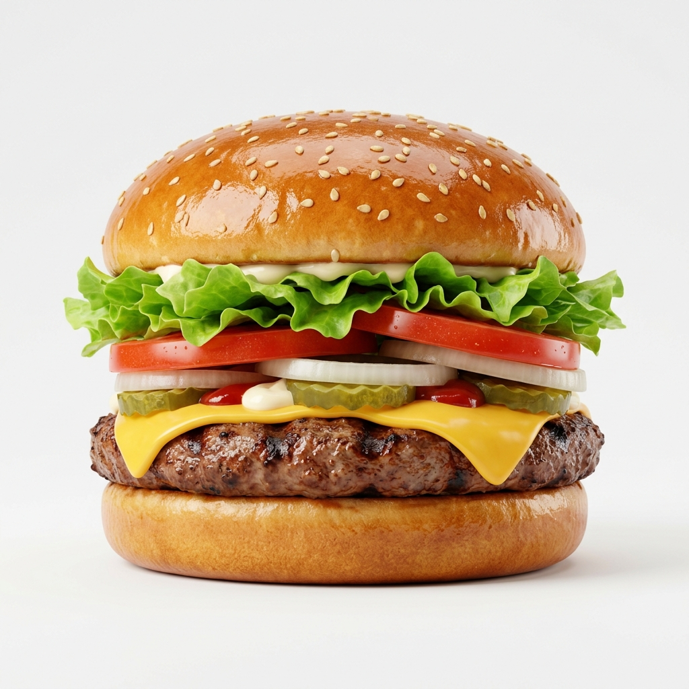

0
Whoppers
0 Whoppers / sec

Whoppers

Whopper Clicker is the ultimate browser-based idle incremental game where you start with a single, perfectly grilled burger and build your way up to a massive fast-food franchise. If you are a fan of classic idle titles and have an appetite for endless upgrades, this game provides non-stop clicking action combined with deep scaling mechanics.
It's simple: click the giant Whopper to earn score! As your score climbs, you can purchase powerful upgrades from the store sidebar.
HTML5 incremental games like Whopper Clicker operate on an exponential growth loop. By combining rapid clicking with automated Whoppers Per Second (WPS) mechanics, the game continuously rewards you even if you step away from the keyboard. Your progress is saved automatically to your browser's local storage!
If you want to reach the billions fast, you need a solid strategy. Early on, focus heavily on active clicking to build up your initial seed resources. As soon as you can afford your first Extra Click and Auto Grill, purchase them. The smooth transition from active, intense clicking to passive, calculated idle income is the hallmark of any great unblocked incremental game.
Don't be afraid to save up for massive late-game upgrades like the New Franchise or the colossal Whopper Factory. While they cost a huge amount initially, their gigantic WPS bump pays for itself rapidly, catastrophically catapulting your production speed into the stratosphere. Checking back in every few hours to spend your accrued idle runtime is the most mathematically efficient way to climb the ranks.
Best of all, Whopper Clicker is a purely web-based HTML5 idle portal, meaning it runs directly inside your active browser instance. There are absolutely no downloads, no app installations, and it's heavily optimized to be wildly fast and lightweight. It operates flawlessly on any modern device—from high-end desktop gaming PCs to typical mobile smartphones. It stands as the ultimate unblocked browser clicker experience!